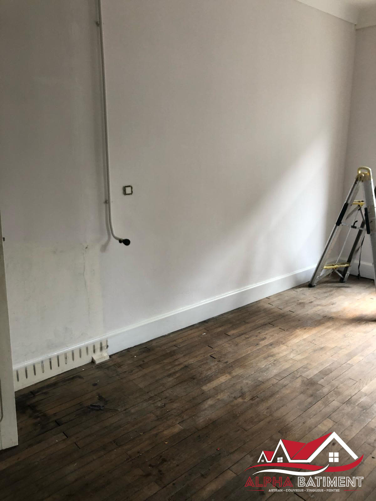

Couvreur, zingueur, peintre en Dordogne.
Alpha Bâtiment intervient à Pazayac et dans les environs de Brive-la-Gaillarde pour vos travaux de couverture, zinguerie, peinture, isolation et façades — avec un camion nacelle qui nous permet de travailler en hauteur sans échafaudage.

Nos prestations
Du dépannage d'urgence à la rénovation complète, huit métiers du bâtiment sous un même toit.

Urgence fuite de toiture
Une infiltration, une tuile envolée après la tempête ? Nous intervenons pour bâcher, diagnostiquer et réparer.

Travaux de couverture
Réfection, rénovation et création de toitures, tuiles comme ardoises.

Travaux de zinguerie
Gouttières, chéneaux et habillages métalliques posés avec précision.

Travaux de peinture
Peinture intérieure et extérieure, préparation des supports incluse.

Travaux d'isolation
Isolation des combles et rampants pour réduire les déperditions de chaleur.

Travaux de façades
Ravalement et traitement des façades pour protéger et embellir vos murs.

Entretien de toiture
Démoussage, nettoyage et contrôle préventif pour prolonger la vie de votre toit.

Pose de fenêtre de toit
Installation et remplacement de fenêtres de toit, étanchéité garantie.

Pourquoi Alpha Bâtiment
Ce qui change concrètement pour votre chantier.
Le camion nacelle
Accès direct en hauteur, sans montage d'échafaudage : chantiers plus rapides et plus sûrs, y compris sur les façades difficiles d'accès.
Un artisan, plusieurs métiers
Couverture, zinguerie, peinture, isolation et façades gérées par la même équipe, du diagnostic à la finition.
Ancrés en Dordogne
Basés à Pazayac, nous connaissons les toitures traditionnelles du Périgord et les contraintes du bâti ancien.
Une zone d'intervention en Dordogne
Nous intervenons à Pazayac et dans les communes voisines. Un doute sur votre secteur ? Appelez-nous, nous vous le confirmons directement.
- Pazayac
- Brive-la-Gaillarde
- Bergerac
- Lembras
- Creysse
- Saint-Laurent-des-Vignes
- Terrasson-Lavilledieu
Nos réalisations
Des chantiers réels, photographiés sur place.